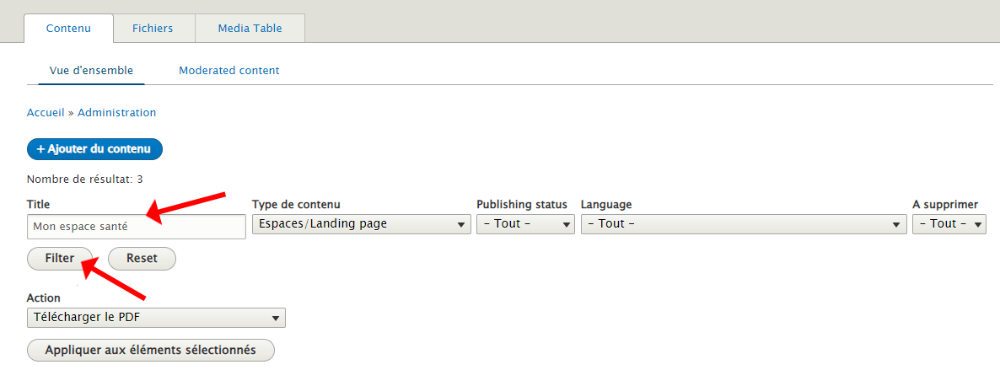
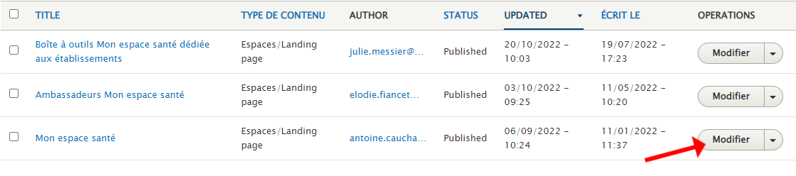
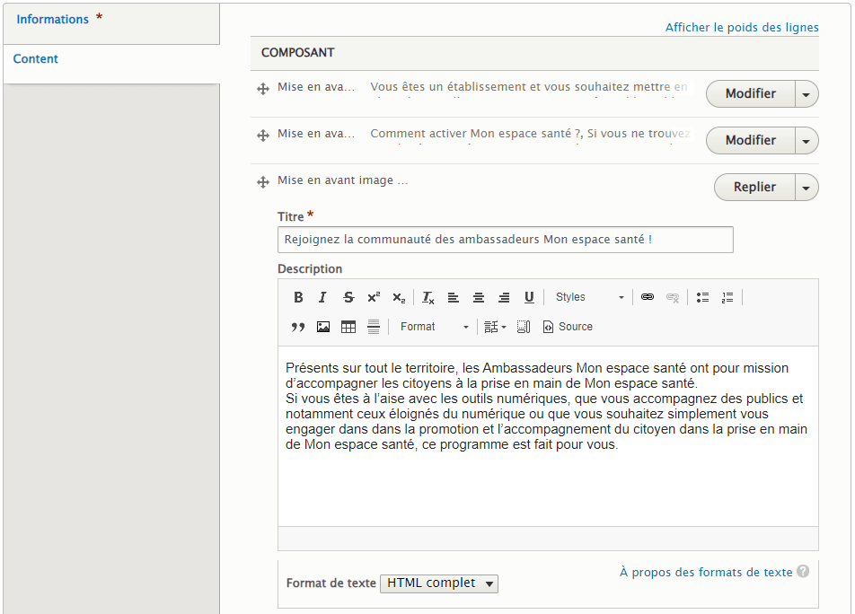
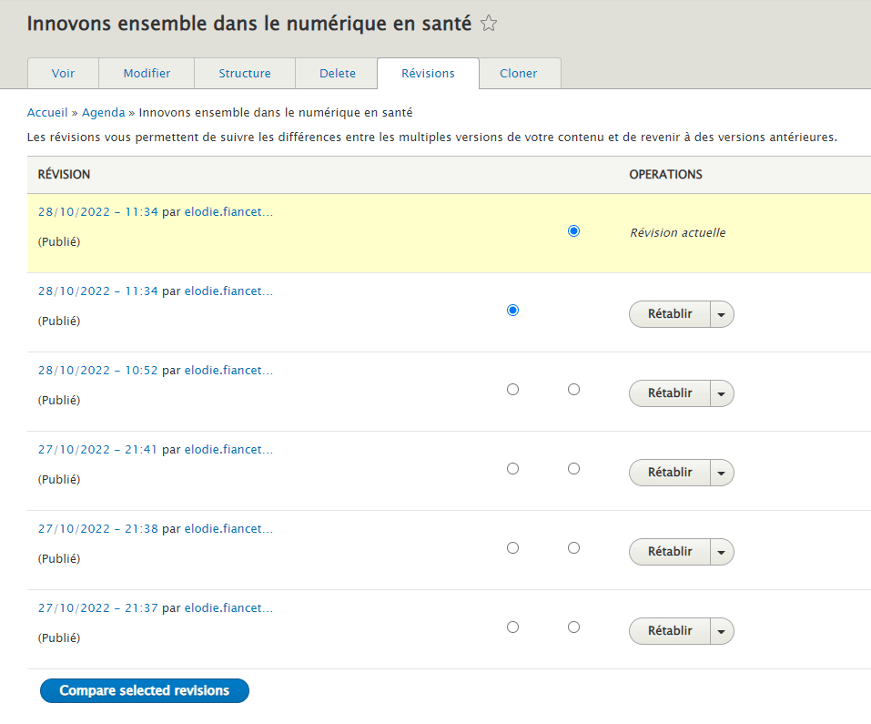
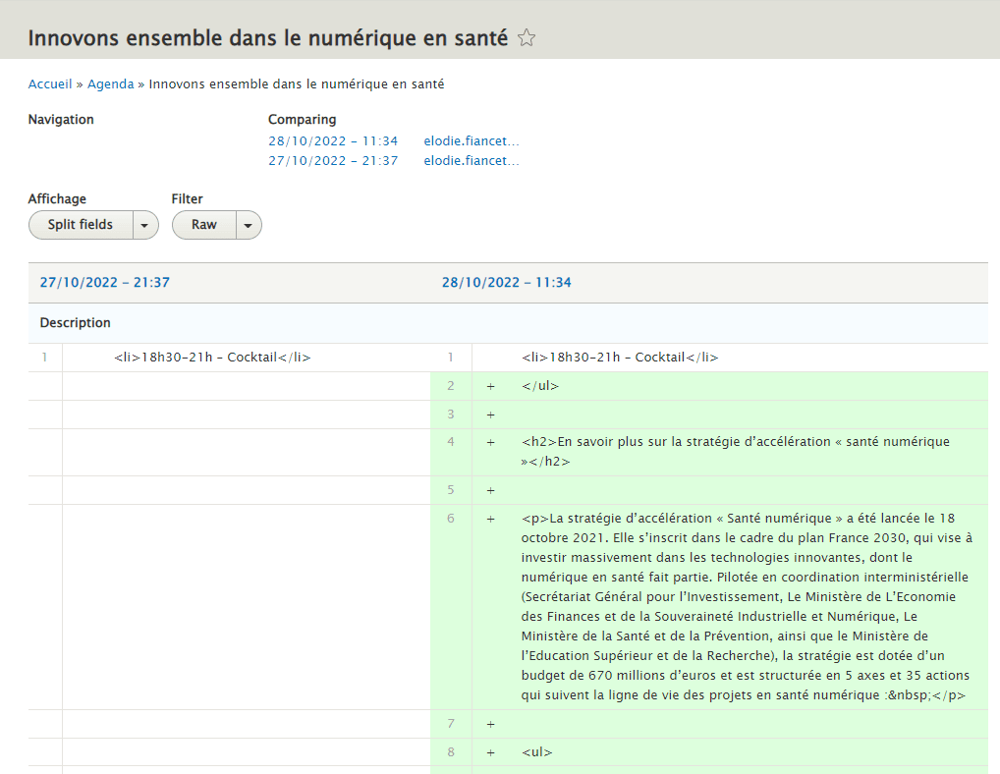
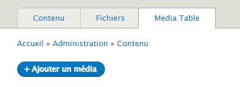
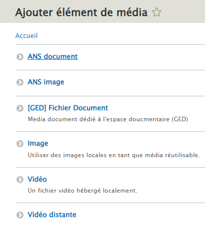
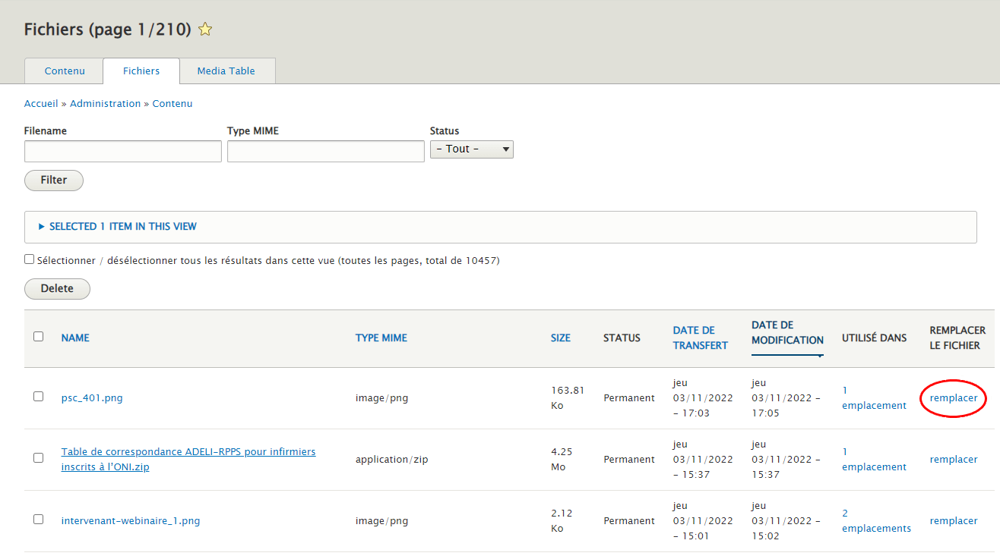
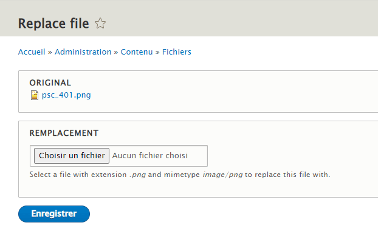

Charte éditoriale
Prise en main des versions et gestion de fichiers
Accès au back-office et modification des contenus
Gestion des droits et module de révision
Ce module de révision des contenus a été développé en 2022 dans le back-office du site pour permettre au responsable de service de modifier les contenus dont il est l’auteur pour ensuite en demander la publication directement, par voie de notification, à l’équipe de la Direction de la Communication.
Toute demande de droit d’accès au back-office est à effectuer par e-mail à la Direction de la Communication, joignable à l’adresse suivante : ans-publications@esante.gouv.fr
Ainsi, le profil ANS contributeur peut mettre à jour son contenu sur le site. Il est également responsable du contenu à mettre en ligne (visuels mis en ligne, chiffres clés à jour, dates actualisées, etc.). L’équipe des validateurs de contenus de la Direction de la Communication sont en charge de publier les mises à jour dans le respect du planning éditorial commun à toute l’Agence.
Ce que peut faire le profil contributeur ANS dans le back-office
- modifier un contenu dont il est l'auteur,
- supprimer un contenu dont il est l'auteur,
- accéder au module de révision d'un coutenu qu'il en soit l'auteur ou non,
- ajouter/modifier/supprimer des médias dont il est l'auteur,
- modifier les taxonomies (ex.: ajout de nouveaux termes).
Les différentes étapes pour modifier un nouveau contenu
Pour trouver le contenu dont vous êtes l’auteur, il convient de saisir le titre (« Title ») de votre page, filtrer si nécessaire par le « Type de contenu ».
Puis actionner le bouton « Modifier ».
Vous accéderez ainsi au contenu de votre webpage, réparti sur différents blocs graphiques qu’il vous faut déplier pour les « Modifier ».
Le chapeau introductif de votre page ou « Header » se compose idéalement des éléments suivants :
- un titre (obligatoire),
- un sous-titre (facultatif),
- des mots-clés,
- une image,
- une brève description.
Le corps du texte est désigné ici par le Contenu (« Content ») de la page qu’il vous faut mettre à jour. Une fonctionnalité de type glisser-déposer, va vous permettre de déplacer l’ordre visuel des blocs de contenus dans la page.
Par défaut, les contenus modifiés par le profil ANS contributeur ont le statut « Brouillon ». Ce dernier n’est pas publié ni signalé au profil ANS validateur. Il faut pour cela sélectionner le statut « A valider » afin d’activer la demande de publication qui restera en attente de validation.
Envoi d’une notification au validateur depuis le back-office
Une fois le contenu créé ou modifié, le validateur reçoit un email l’informant qu’un contributeur a créé un nouveau contenu ou modifié un contenu existant.
Le validateur peut également accéder à la liste des contenus à modérer depuis le BO en cliquant sur l’entrée « Moderated content » ou en ciblant les contenus avec le statut « Unpublished ».
Avant de publier un contenu, le validateur doit relire le contenu et y apporter des modifications si besoin.
Le module de révision est accessible depuis l’onglet « Révision » permet à tous les profils autorisés (qu’il soit ANS contributeur ou ANS validateur) de visualiser dans le détail les modifications apportées à un contenu. Pour cela, l’utilisateur peut comparer la version actuelle avec une version antérieure de son choix.
Par défaut, la version actuelle est toujours sélectionnée.
Les modifications sont listées par composant puis par champ.
NB : ce module est majoritairement utilisé par le validateur qui peut accéder aux modifications effectuées avant de publier un contenu.
Module de gestion des fichiers et médias
Objectif :
Permettre aux contributeurs d’ajouter et de remplacer des médias existants sans changer le nom du média dans le back-office.
Les différentes étapes pour gérer un média dans le back-office
Etape 1 : Créer un media
- cliquer sur Contenu > Media Table > Ajouter un Média,
 - choisir le type de média à créer,
 - renseigner les champs et ajouter le média,
- enregistrer.
Étape 2 : Remplacer un fichier ou media dans le back-office
- cliquer sur Contenu > Fichiers,
- identifier le média à remplacer et cliquer sur « Remplacer »,
- dans le champ « Remplacement » ajouter le média à remplacer,
- enregistrer.
NB : les médias doivent être du même format. Un fichier au format PDF ne peut remplacer une image par exemple.
 Étape 3 : Procéder à la vérification
- cliquer sur le nom du média pour l’afficher dans un nouvel onglet puis :
- vider ses caches (Ctrl + F5),
- vérifier que le nouveau média s'affiche bien,
- vérifier que le nom du média est inchangé dans le BO.
- si le média est contribué sur une page :
- se rendre sur la page en question,
- vider ses caches (Ctrl + F5),
- vérifier que le nouveau média s'affiche bien,
- vérifier que le nom du média est inchangé dans le BO.